La présentation peut être suivie sur...
Localisation de LoRa par DToA
Présentation thèse de Bachelor
par Sebastien Chassot
Ingénierie des technologies de l'information avec orientation en Informatique matérielle
HESSO - hepia
septembre 2017
Professeur responsable :
Introduction
Principes de la localisation
Objectifs du projet
Démarche de ce projet
Résultats et perspectives
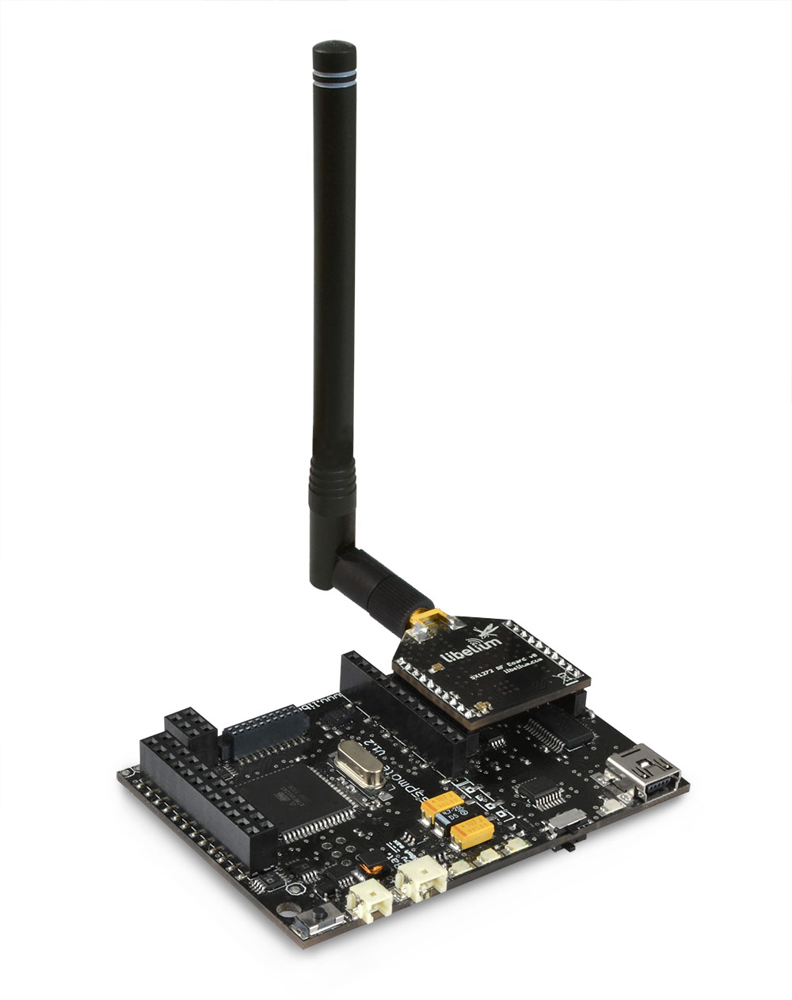
Lien RF pour applications IoT
Innovation technologique - Semtech
Une modulation simple et efficace sur de longues distances
LoRa la couche PHY et LoRaWAN la couche de routage
En résumé, lien faible consommation couvrant de grandes distances
Time of Flight (ToF) vs. DToA
GPS : Les satellites émettent un signal synchrone
GPS : Le récepteur régénère l'horloge et calcule sa position
DToA : L'émetteur est passif
DToA : Les récepteurs doivent être synchronisés et calculent
DToA : Le réseau GPS est utilisé comme source de temps par les récepteurs
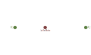
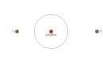
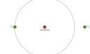
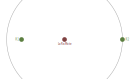
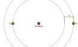
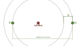
La vitesse de propagation d'une onde RF est de 2/3 de la vitesse de la lumière
Une onde RF parcours 1 mètre en 4-5 ns
Une fréquence de 50MHz ⇔ une période de 20 ns (~4 mètres)
Une dérive d'une s/an équivaut à une dérive de 31 ns s-1
Le temps en vol d'un message de 32 symboles peut atteindre 1.6 [s]
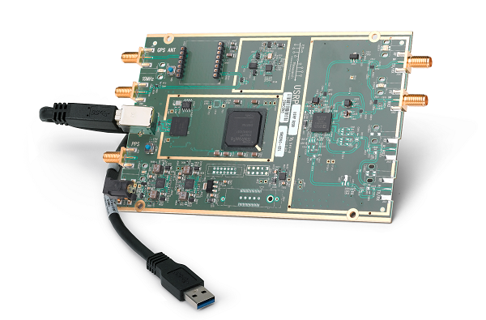
Un système d'acquisition de signal RF
Travail sur une plage de fréquences étendue (de 70MHz à 6GHz)
résolution de 50 Msamples/s
Outils de prototypage
ASIC dédié à une application RF spécifique

ASIC dédié à une application RF spécifique
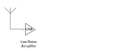
Application RF implémentée au niveau logiciel
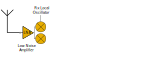
Application RF implémentée au niveau logiciel
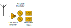
Application RF implémentée au niveau logiciel
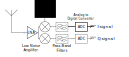
Application RF implémentée au niveau logiciel
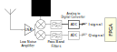
Application RF implémentée au niveau logiciel
L'architecture du système
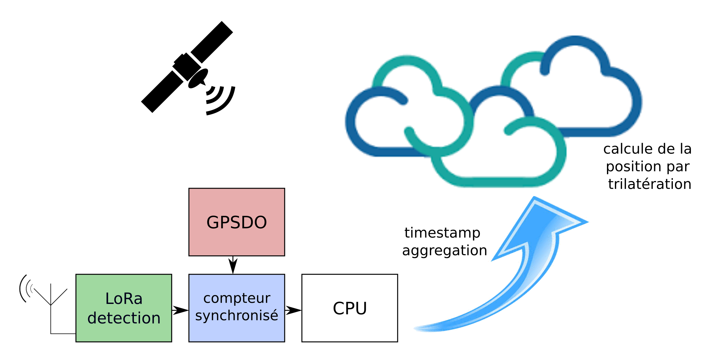
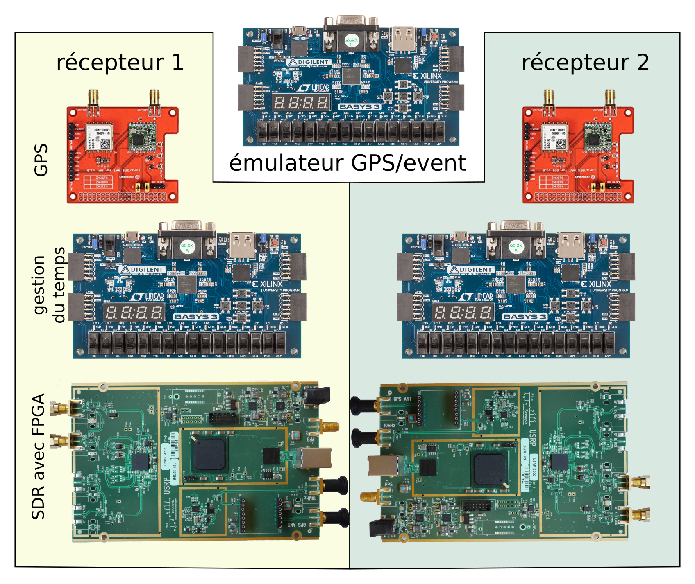

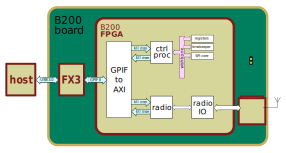
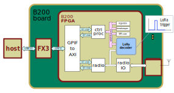
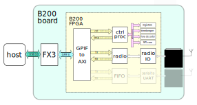
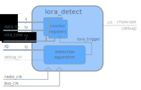
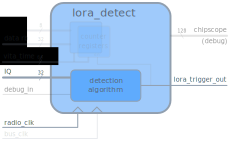
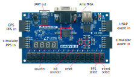
Modulation par étalement de spectre (Spread Spectrum)
Utilisation d'un chirp (technologie radars/sonars)
Composition d'une modulation de fréquence (FSK) et d'un chirp
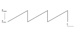
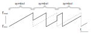


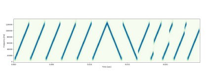
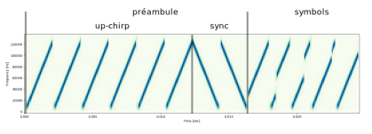

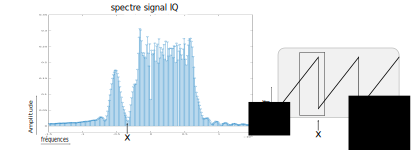
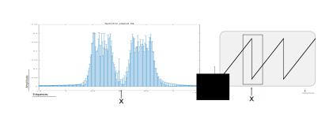

Les sources d'erreurs ont été identifiées
Des solutions techniques existent pour les limiter
Le système est suffisament précis pour en tirer une information pertinentes
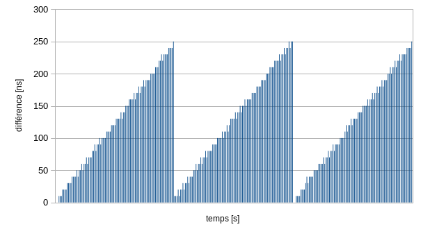
Varie de 0 ns à 250 ns (0-75m)
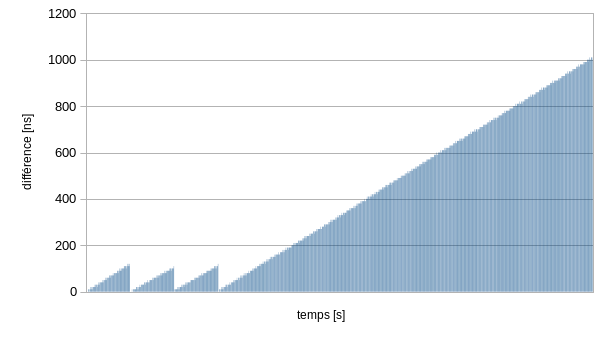
Les compteurs nécessitent une resynchronisation régulière
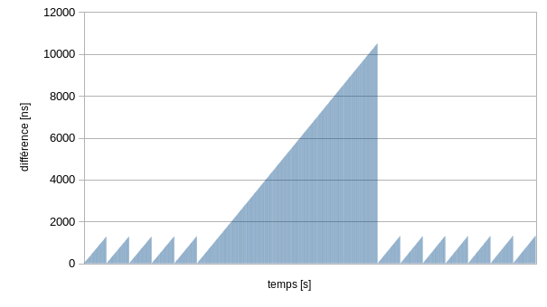
Les compteurs se resynchronisent quand ils recouvre le signal PPS
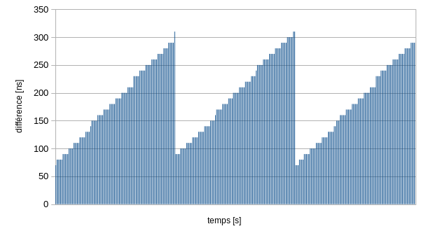
Le jitter du GPS s'ajoute à la dérive du compteur
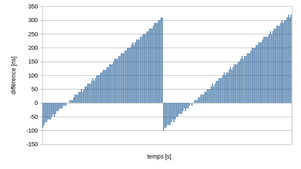
Le jitter du GPS s'ajoute à la dérive du compteur
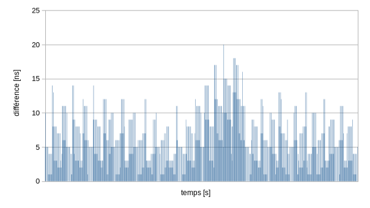
Equart maximum de ± 20 ns (~5m)
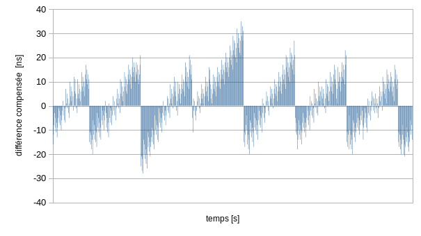
Equart maximum de ± 40 ns (~10m)
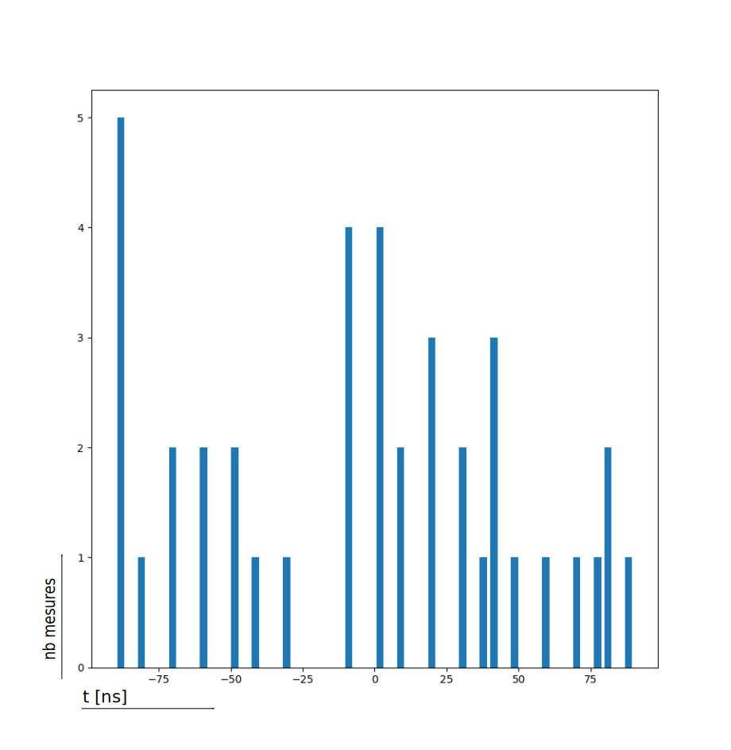
La synchronisation des récepteurs est satisfaisante (±40 ns ⇔ ±10m)
L'utilisation de Oven Controlled Oscillator (OCXO) et de GPS de bonne qualité améliorerait encore la précision
Il reste à trouver un algoritme plus robuste
L'architecture transceiver, FPGA et CPU (ethernet) est validée
L'extension à plus de récepteurs permettrait une géolocalisation
Questions ?
liens
https://media.ccc.de/v/33c3-7945-decoding_the_lora_phy (vidéo)
https://github.com/selinux/LoRa_DToA_host (code des scripts et utilitaires)
https://github.com/selinux/uhd (code du projet)
https://github.com/selinux/fpga (code de la partie FPGA)
http://files.ettus.com/manual/index.html (doc USRP B200)